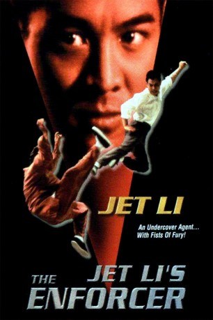
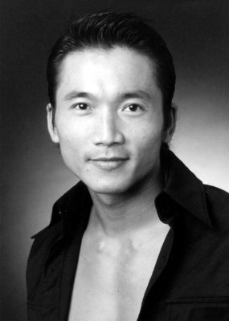

#7524 The Hero
 
 IMDB-Wertung: 6.6 / 10
IMDB-Wertung: 6.6 / 10  Metascore: 0
Metascore: 0 
Ein volkschinesischer Undercover-Agent sieht in Hongkong nach dem Rechten und legt kapitalistischen Superverbrechern das Handwerk. Hilfe bekommt er von seinem zehnjährigen, Kung-Fu-erfahrenen Sohn, der ihn nach dem Tod der Mutter nachreist und die sich anbahnende Beziehung zu einer Hongkonger Polizistin absegnet. Haarsträubende Actiongeschichte auf mittelmäßigem Niveau, die sich mit dem noch unbekannten Jet Li in der Hauptrolle schmückt.
Jahr: 1995
Dauer: 104 Minuten
FSK: 18
Land: Hong-Kong Studio: M.I.B.Tonspuren: DD5.1 - , DD2.0 - ,
Untertitel: Deutsch, Englisch,
Auflösung: 1080p (1920x1080) Größe: 8243 MB
Genre: Action, Thriller, Drama, Krimi
Regisseur:  Corey Yuen
Corey Yuen
Drehbuch: Sandy Shaw
Soundtrack:
Darsteller:
 Jet Li als Kung Wei
Jet Li als Kung Wei- Anita Mui als Inspector Fong
 Rongguang Yu als Po Kwong
Rongguang Yu als Po Kwong-  Collin Chou als Thug
- Damian Lau als Yat-Wah's Boss
- Victoria Hoffman als
- Martin Spanjers als
 Fred Tatasciore als
Fred Tatasciore als - Brad Sergi als
 David Graf als
David Graf als  Karen Maruyama als
Karen Maruyama als - Tim Lounibos als
- Dean Scofield als
 Derek McGrath als
Derek McGrath als  John DeMita als Kung Wei
John DeMita als Kung Wei- Tom Konkle als Ken
- Thorsten Nickel als Russian arms dealer , uncredited
- Mo Tse als Ku Kung / Johnny Kung
 Ken Lo als Thug
Ken Lo als Thug- Lo Hen-Chow als
- Bonnie Fu als
- Henry Fong als Auction Bidder
- Mary Ellen Dunbar als
 Michael Sorich als
Michael Sorich als - Mark Klastorin als
- Evan Cohen als
- Brady Kimball als
- Arianna Ratner als
- Blackie Shou Liang Ko als Darkie
- Yuen-Fan Ng als
- Wing-San Tang als
 Corey Yuen als Bartender
Corey Yuen als Bartender- Bing Lei Li als Shushu , uncredited
- Paul Rapovski als Gunman , uncredited
Datei: X:\FSK18-Eastern\Hero, The (1995, FSK18, 1920x1080).mkv seit 15.11.2017
Festplatte: FSK18
 Es gibt insgesamt 102 Filme in der Gruppe 'FSK18-Eastern'
Es gibt insgesamt 102 Filme in der Gruppe 'FSK18-Eastern'